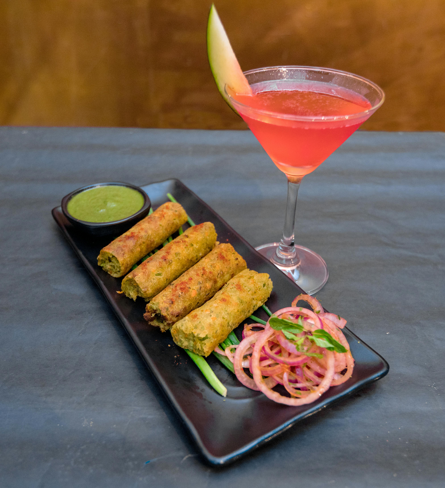

Veg spring roll
About This Recipe
Veg Spring Roll is a crunchy golden parcel filled with a savory mix of finely chopped vegetables, stir-fried in soy and spices. Wrapped in thin pastry and deep-fried until crisp, these rolls are a popular appetizer, best served hot with sweet chili or soy dipping sauce.
Ingredients
- 12 Spring Roll Wrappers (or eggless wrappers)
- 2 cups Cabbage (finely shredded)
- 1 Carrot (julienned)
- ½ cup Bell Peppers (thinly sliced)
- ½ cup Beansprouts
- 2 Green Onions (chopped)
- 2 cloves Garlic (minced)
- 1 tbsp Soy Sauce
- 1 tsp Ginger (grated)
- ½ tsp Black Pepper
- 1 tbsp Cornstarch + 2 tbsp water (for sealing)
- Oil (for deep frying)
- Salt to taste
Instructions
- Sauté Filling: Heat 1 tbsp oil. Stir-fry garlic, ginger, and veggies on high heat for 2-3 mins. Add soy sauce, pepper, and salt. Cool completely.
- Wrap: Place 1 tbsp filling on a wrapper. Fold sides, roll tightly, and seal edges with cornstarch paste.
- Fry: Heat oil to medium-hot. Fry rolls until golden and crisp (2-3 mins per batch). Drain on paper towels.
- Serve: Hot with sweet chili sauce or schezwan dip.
Tips
- Crispy Rolls: Ensure oil is hot (not smoking) to prevent sogginess.
- Baking Option: Brush rolls with oil and bake at 200°C (400°F) for 15-20 mins.
- Make-Ahead: Freeze uncooked rolls (no thawing needed before frying).